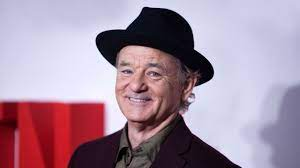

بیل موری به جمع بازیگران فیلم مرد مورچه ای و زنبور کوانتو مانیا پیوست

بیل موری در مصاحبه ای گفته که اخیرا در فیلمی از دنیای سینمایی مارول بازی کرده که با توجه به صحبت های او
انیمیشن لایتر قرار است در تاریخ 17 ژوئن 2022 مصادف با 27 خرداد 1401 اکران شود کریس ایوانز صدا پیشگی شخصیت لایتر را بر عهده دارد کارگردان این فیلم نیز انگس مک لین می باشد